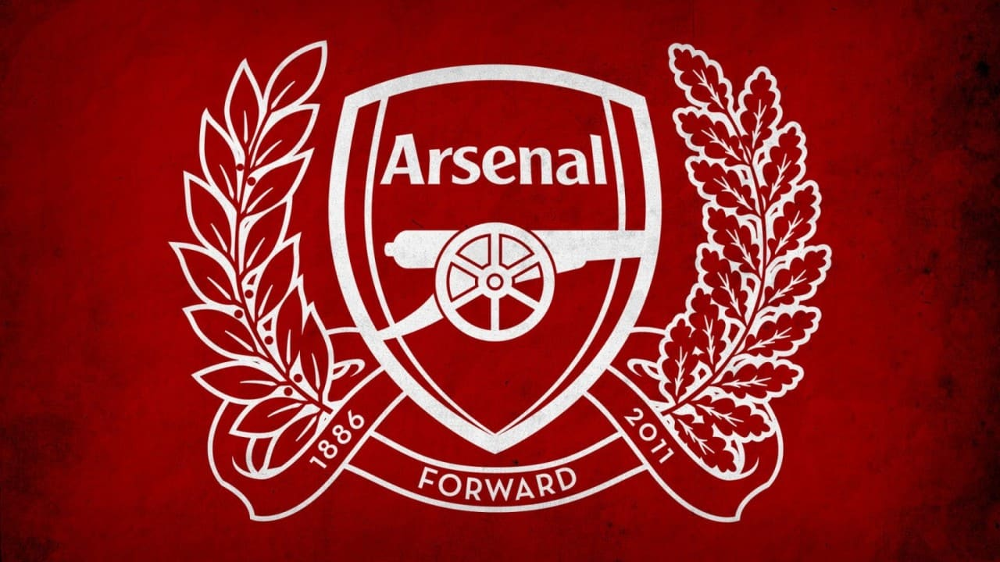
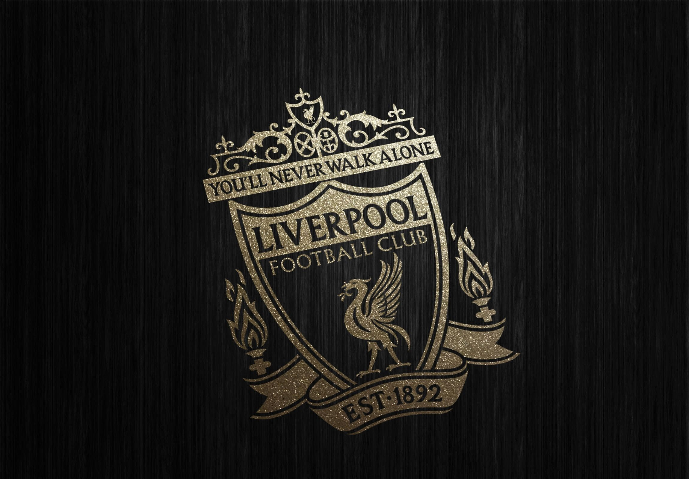
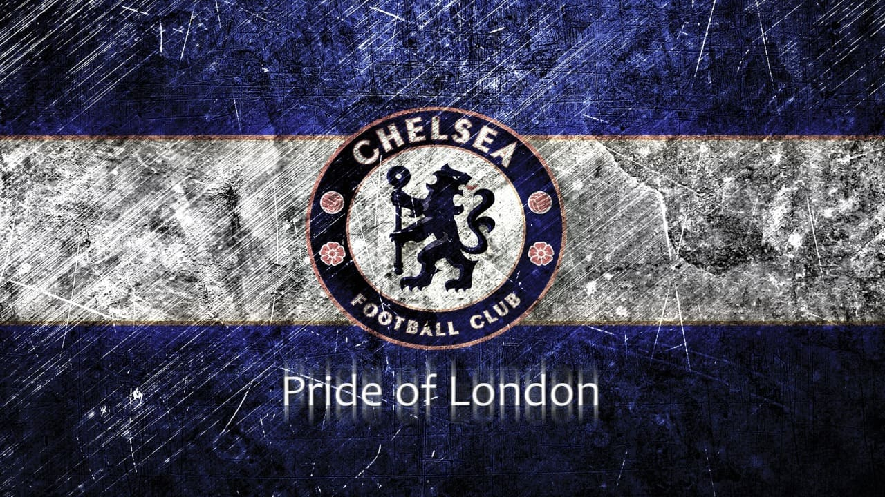

Arsenal

Stadium - Emirates Stadium
Arsenal Football Club (dikenal pula sebagai Arsenal atau The Gunners) adalah klub sepak bola profesional Inggris yang berbasis di daerah Holloway, London. didirikan pada 1886 dengan nama Dial Square. Klub ini bermain di Liga Utama Inggris yang termasuk salah satu klub tersukses di sepak bola Inggris, yang telah memenangkan 13 gelar kasta utama Liga Inggris (10 pada era Divisi Pertama dan 3 pada era Premier League) dan 14 gelar di Piala FA (Gelar paling banyak). Arsenal memegang rekor untuk periode terpanjang berada di kasta puncak Liga Inggris tanpa pernah terdegradasi sejak musim 1919 dan menjadi tim pada peringkat pertama dalam klasemen Liga Inggris sepanjang abad ke-20. Arsenal menjadi tim kedua di Inggris yang menyelesaikan semusim liga tanpa kalah (musim 2003–04) dan tim pertama yang melakukannya pada era di mana satu musim berlangsung 38 pertandingan.
Liverpool

Stadium - Anfield
Liverpool Football Club (dikenal pula sebagai Liverpool atau The Reds) adalah sebuah klub sepak bola asal Inggris yang berbasis di Kota Liverpool. Saat ini Liverpool adalah peserta Liga Utama Inggris. Liverpool juga merupakan juara dari Liga Utama Inggris musim 2019–2020. Liverpool telah memenangkan 6 trofi Liga Champions UEFA (dulu Piala Champions) dan merupakan klub dengan pemegang gelar juara Liga Champions UEFA terbanyak di Inggris dan ketiga di Eropa setelah Real Madrid dan AC Milan. Selain itu Liverpool juga pemegang 3 gelar juara Liga Eropa UEFA dan 4 gelar Piala Super UEFA. Di kompetisi domestik, Liverpool adalah klub dengan 19 gelar juara Liga Inggris, 7 Piala FA, serta 8 kali juara Piala Liga. Liverpool didirikan pada tahun 1892 dan bergabung dengan Football League pada tahun berikutnya. Klub ini telah bermain di Stadion Anfield sejak pembentukannya yang terletak sekitar 4,8 km dari pusat kota Liverpool.
Chelsea

Stadium - Stamford Bridge
Chelsea Football Club adalah sebuah klub sepak bola Inggris yang bermarkas di Fulham, London. Chelsea didirikan pada tahun 1905 dan kini berkompetisi di Liga Utama Inggris. Kesuksesan pertama Chelsea diraih saat meraih gelar juara liga pada tahun 1955. Beberapa gelar dari berbagai kompetisi juga berhasil diraih pada dekade 1960an, 1970an, 1990an, dan 2000an. Sepanjang sejarah penampilan dalam dunia sepak bola di Inggris dan Eropa, Chelsea telah meraih enam gelar juara Liga Utama Inggris, delapan Piala FA, lima Piala Liga, dua Liga Eropa UEFA, dua Piala Winners UEFA, satu Liga Champions UEFA, dan satu Piala Super UEFA. Dalam dua dekade terakhir merupakan periode terbaik kesuksesan Chelsea dengan meraih lebih dari 30 gelar sejak tahun 1997, termasuk untuk pertama kali meraih gelar ganda, Liga Utama Inggris dan Piala FA pada tahun 2010 serta gelar juara Liga Champions UEFA pada tahun 2012 dan Liga Eropa UEFA pada 2013 dan 2019.